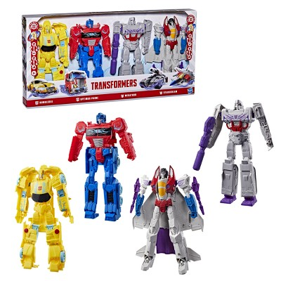
Mega Changer four-pack
Four large figures that change into a truck, car, tank, and plane.
$54.99
View set at Target2026 · Gift ideas for family
Clothing sizes, favorite interests, and specific gift ideas—all on this page.
Scroll down to see everything, or use a button to go straight to a section.
Character tees, matching sweat sets, long-sleeve shirts, and pants.
A new favorite: robots that change into vehicles.
Superhero toys and dress-up. Character pictures are included below.
Potions, wands, wizard hats, and make-believe.
A big favorite. Check with Mom first to avoid duplicates.
He loves colorful bath bombs in all kinds of shapes.
Stories to read or listen to, and puzzles to work on.
Lucas generally wears kids’ size 6 or 6–7. We really like H&M and Abercrombie Kids; H&M tends to fit him best.
Winter priorities: pants and long-sleeve T-shirts. Lucas loves character tees and matching sweat sets. He doesn’t need many hoodies.
| Brand | Shirts | Pants |
|---|---|---|
| H&M · best fit | 6–8 years | 6–8 years |
| Abercrombie Kids | 7–8 | 5–6 or 5–6 Long |
For costumes, start with kids’ size 6 or 6–7 and check the individual costume’s size chart.
Lucas has recently gotten into Transformers and would really like a set of robots that change into vehicles. Other age-appropriate Transformers toys and gifts are welcome, too. Look for toys designed for kids around his age, with transformations he can manage.
The sets below are examples, not the whole list. Each includes Optimus Prime, Bumblebee, Megatron, and Starscream, all 11 inches tall and rated ages 6+.

Four large figures that change into a truck, car, tank, and plane.
$54.99
View set at Target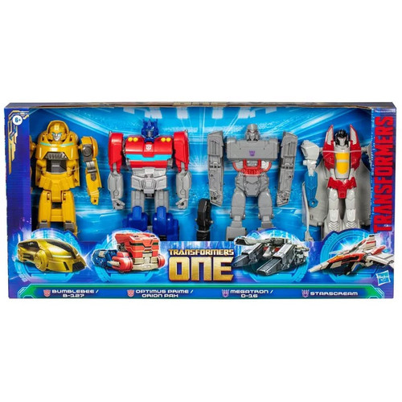
An alternative with movie-style designs of the same four characters.
$49.99
View set at ToyWizLucas loves Avengers action figures, superhero costumes, and dress-up toys. Choose age-appropriate toys with pieces that aren’t too tiny. For costumes, start with kids’ size 6 or 6–7 and check the size chart. The character guide below shows the heroes he likes.
The pictured items are examples, not the whole list. Other toys and costumes featuring these characters are welcome, too.
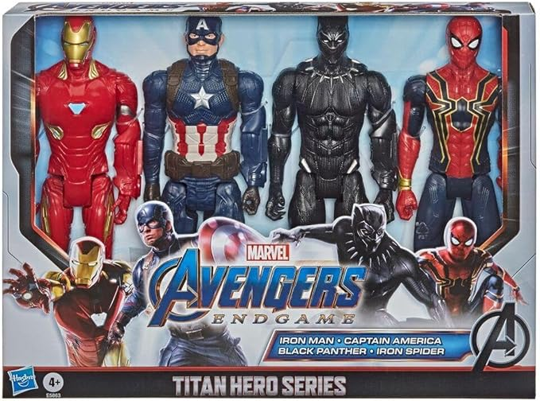
Captain America, Iron Man, Black Panther, and Iron Spider (Spider-Man in his armored suit). This is the set Mom picked.
$36.33
View Avengers set on Amazon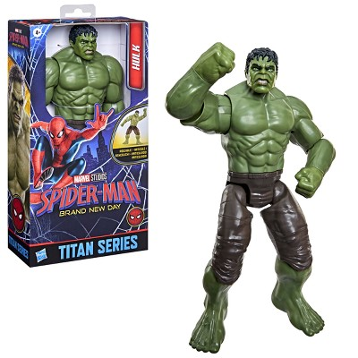
A poseable Hulk figure, about 12 inches tall. Ages 4+.
$14.99
View Hulk at Target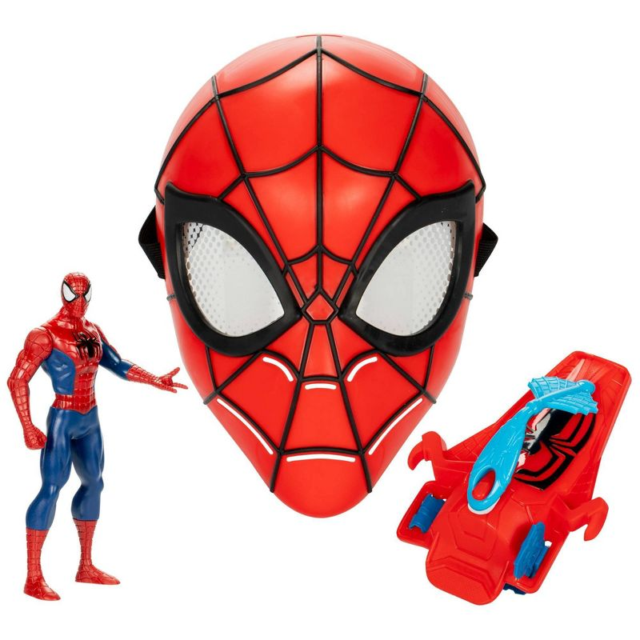
A 6-inch Spider-Man figure, stretchy-strap mask, and wrist web-slinger with a soft projectile. Ages 5+.
$24.99
View at Target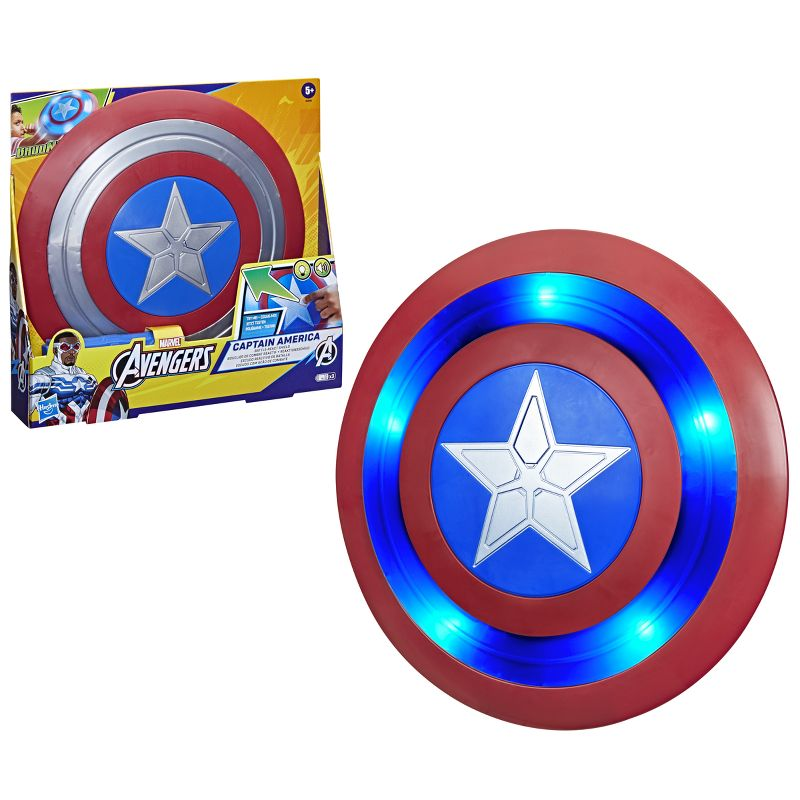
An 11-inch shield with motion-activated lights and battle sounds for superhero dress-up. Ages 4+.
$29.99
View at TargetChoose a hero pictured below. Lucas wears kids’ size 6 or 6–7; check the costume’s size chart.
The Avengers are a team of Marvel superheroes. These are the heroes and friends Lucas likes. Use the pictures to recognize their toys and costumes; designs may vary.
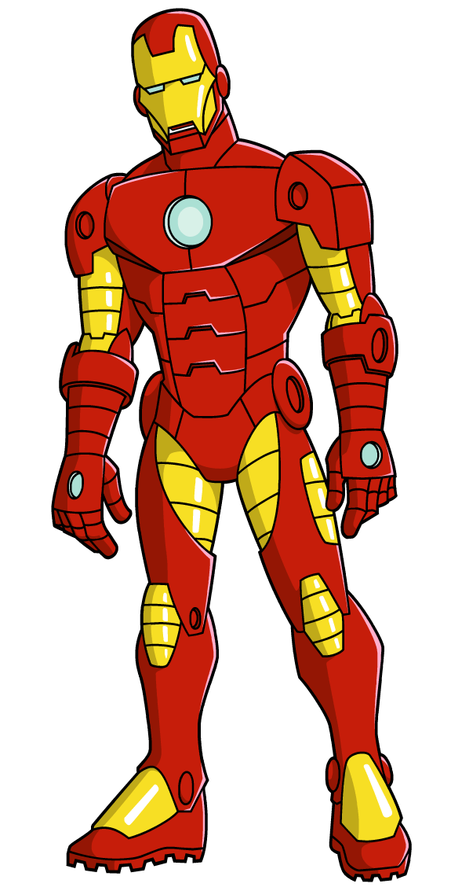
Red-and-gold armor, a helmet, and a glowing chest light.
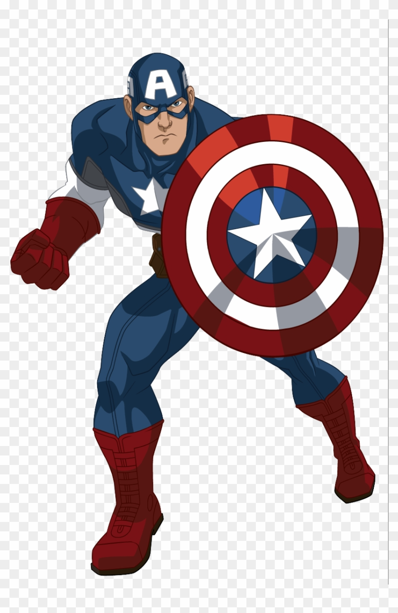
Blue suit with a white star and a round red-white-and-blue shield.
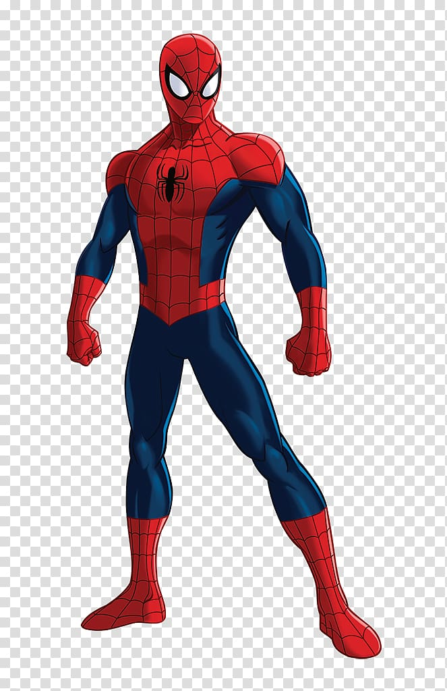
Red-and-blue suit with a web pattern and large white mask eyes. Iron Spider is a red-and-gold version.
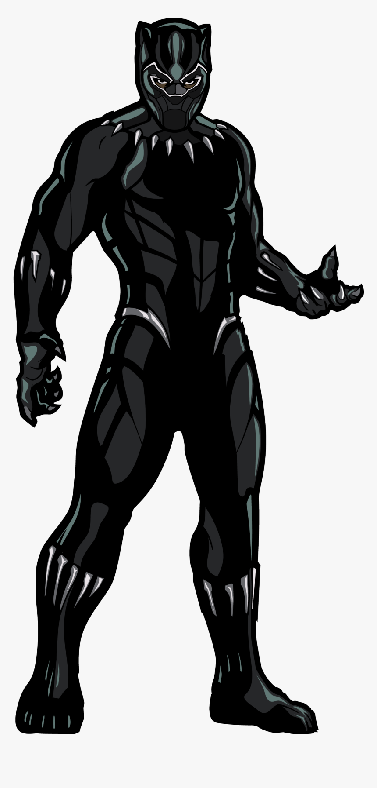
Black suit, pointed cat ears on the mask, and a claw-shaped necklace.
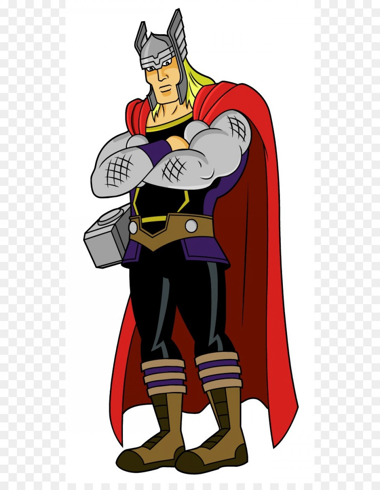
Red cape, armor, long blond hair, and a hammer. Often wears a winged helmet.
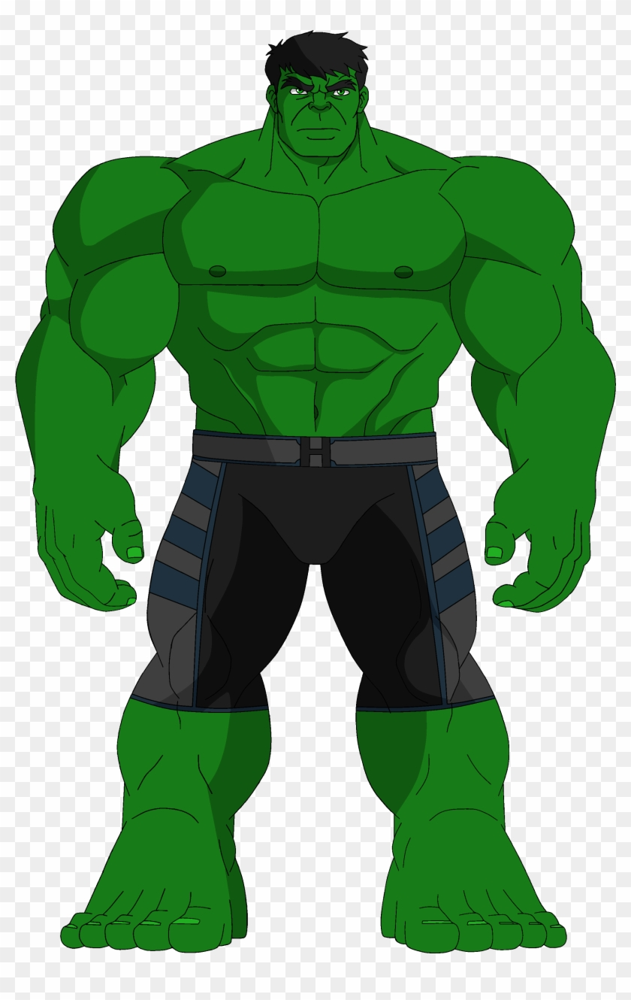
Huge green muscles and shorts. Usually has bare feet.
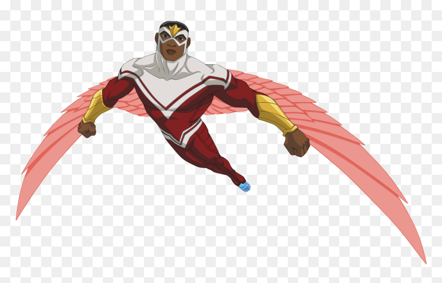
A winged superhero, often in red and white. Sam Wilson also appears as Captain America with wings and a shield.
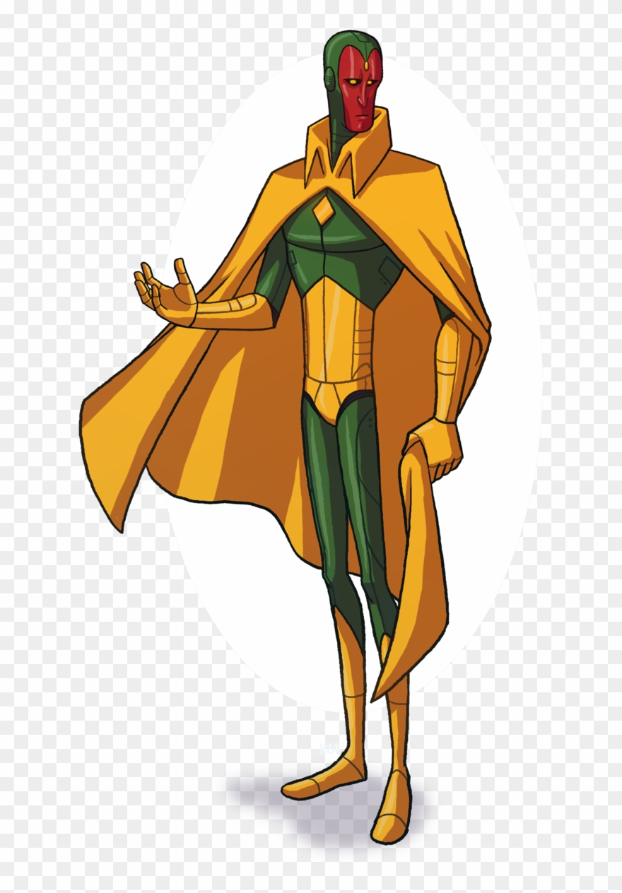
Green suit, yellow cape, and red face.
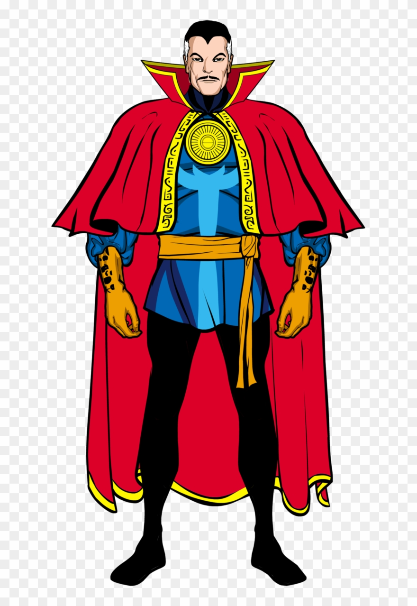
Blue outfit, red high-collared cape, and a gold amulet.
Character artwork © Marvel and respective artists. Artwork sources.
Lucas loves magic, potions, and wizard dress-up. Age-appropriate potion kits, magic wands, wizard hats and capes, pretend spellbooks, and little treasure chests are all good ideas. For full costumes, start with kids’ size 6 or 6–7 and check the size chart.
The pictured items are examples, not the whole list. Other magical toys and dress-up ideas are welcome, too.
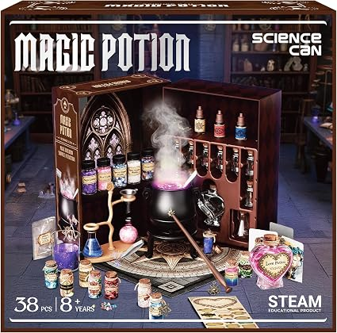
Mom’s pick: cauldron, wand, potion bottles, recipes, and experiments. Listed for ages 6–10. The cauldron needs 2 AAA batteries, not included.
$38.99
View potion kit on Amazon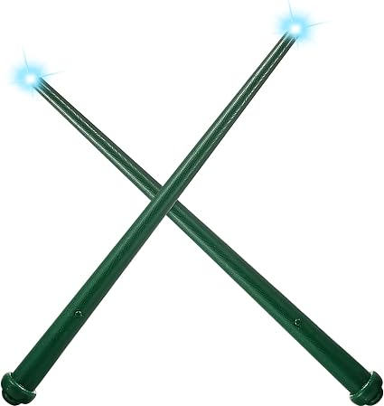
Two plastic wands with lights and sounds; the listing includes batteries. An optional extra—the potion kit already includes a wand.
$9.99
View wands on Amazon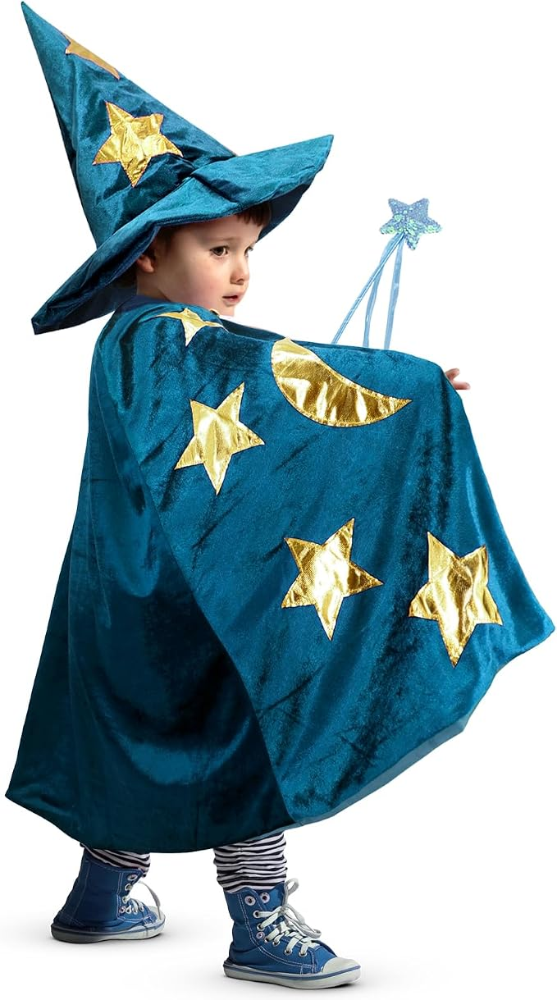
CosInStyle three-piece blue set with sewn-on stars. One size; cape is 25.8 inches long. Seller lists ages 4–13. Mom should confirm the cape length.
$29.99
View on Amazon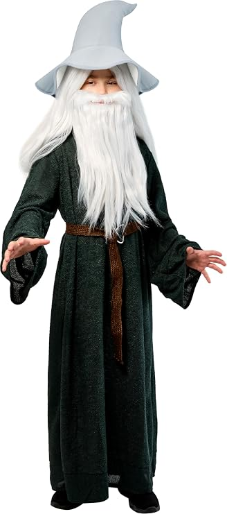
Official Rubies Lord of the Rings costume. Choose Medium (8–10), the next size up. The brand notes that costumes run smaller than regular clothing. Wig, beard, and staff are not included.
$24.49
View on Amazon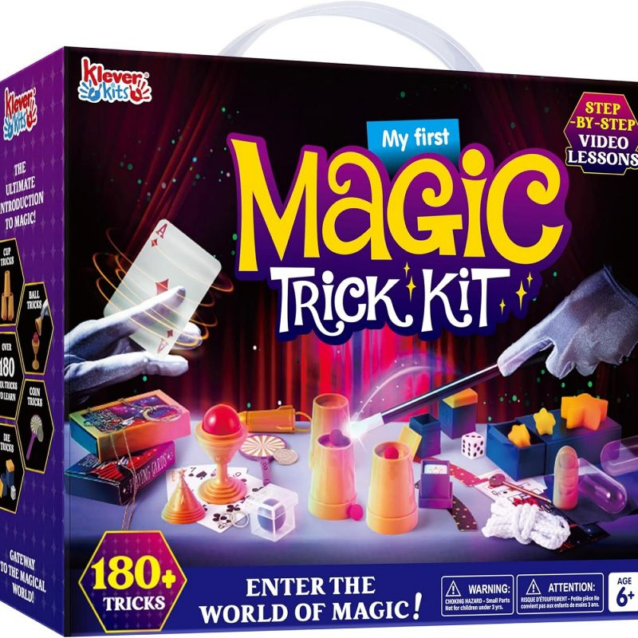
Learn classic tricks with cups and balls, a wand, cards, and other magic props. Includes step-by-step video lessons. Ages 6+.
$29.99
Sold and shipped by Joyin through Target.com.
View at Target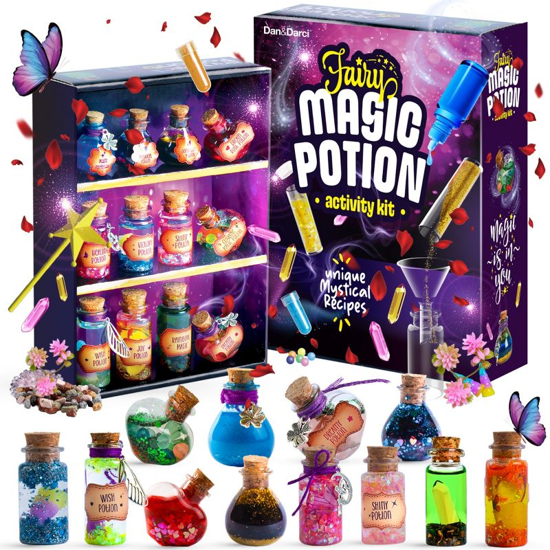
Another potion-kit option: 12 recipes with glitter, beads, charms, and little bottles. Ages 6+. The listing describes glass bottles; a craft activity to do together.
$21.99
Sold and shipped by Surreal Brands through Target.com.
View at TargetA wizard hat and cape, a blank spellbook, or a treasure chest for pretend gems. Lord of the Rings costumes, such as a Hobbit outfit or Gandalf-style robe and hat, are welcome. Kids’ size 6 or 6–7. No swords or Lord of the Rings plush toys.
Lucas loves Star Wars ships and action figures—look for sturdy toys he can play with, with pieces that aren’t too tiny. Age-appropriate LEGO Star Wars sets are welcome, too. Check the age range on the box.
Please check with Mom before buying. Lucas already has lots of Star Wars toys and LEGO sets. Send her the exact item or LEGO set number so she can check for duplicates.
The items below are examples of things he would enjoy. Other age-appropriate ships, figures, and LEGO sets are welcome.
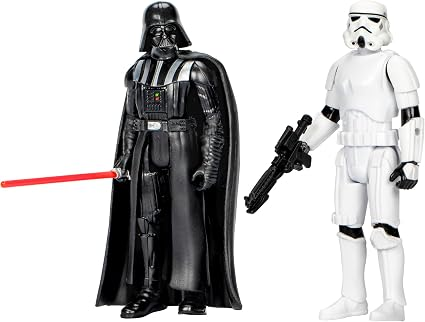
Two poseable 4-inch figures with a lightsaber and blaster. Ages 4+. Hasbro Epic Hero Series.
$15.61
View on Amazon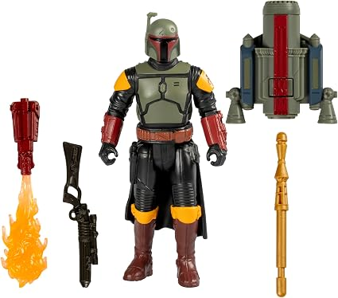
A 4-inch figure with a launching jetpack and four accessories. Ages 4+. Part of the same Hasbro Epic Hero Series.
$16.90
View on Amazon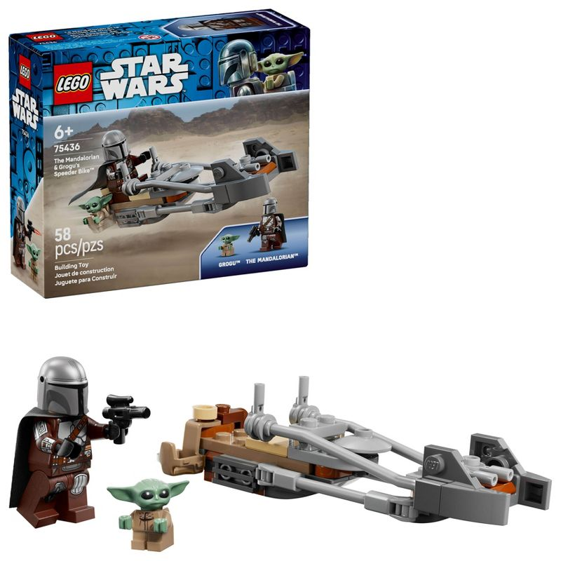
A quick 58-piece build with the Mandalorian and Grogu. Ages 6+ · Set 75436. The finished bike is about 4½ inches long. Standard small LEGO pieces; check this set number with Mom before buying.
$6.99
View at Target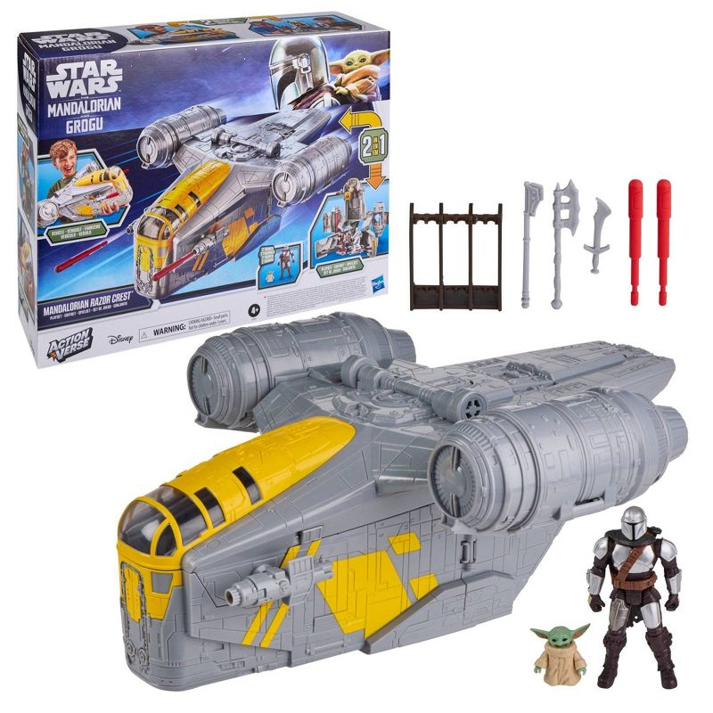
A ship that opens into a 14-inch-tall playset, with a 4½-inch Mandalorian figure. Ages 4+. Includes a small 1.3-inch Grogu and accessories. Adult assembly required; check with Mom for duplicates.
$59.99
View at TargetLucas loves Lush bath bombs—colorful characters, funny shapes, and classic round ones. These are examples of the variety he enjoys; seasonal designs may change.
* Mom is allergic to lavender. Please choose bath bombs with no lavender and check the current ingredients before buying.
Books: Lucas likes space, science, animals, dragons, and Pokémon. Stories to read together and books he can explore on his own are both welcome.
Yoto cards make a great gift! Lucas loves them, especially nonfiction. He already has a big collection, so ask Mom before buying—she can help find titles he doesn’t have yet. Send her the exact title to check.
Puzzles: Choose age-appropriate puzzles featuring Star Wars, Avengers and superheroes, Transformers, dragons and magic, Pokémon, space, science, or animals. Look for children’s puzzles with larger pieces and an age rating around 6+. The examples include an easier jumbo floor puzzle and 100-piece options.
The puzzles below are examples, not the whole list. Other puzzles within these interests are welcome.
Elephants, giraffes, lions, and other animals gathered around a waterfall. 100 extra-large pieces · Ages 6+.
$16.99
View puzzle at Ravensburger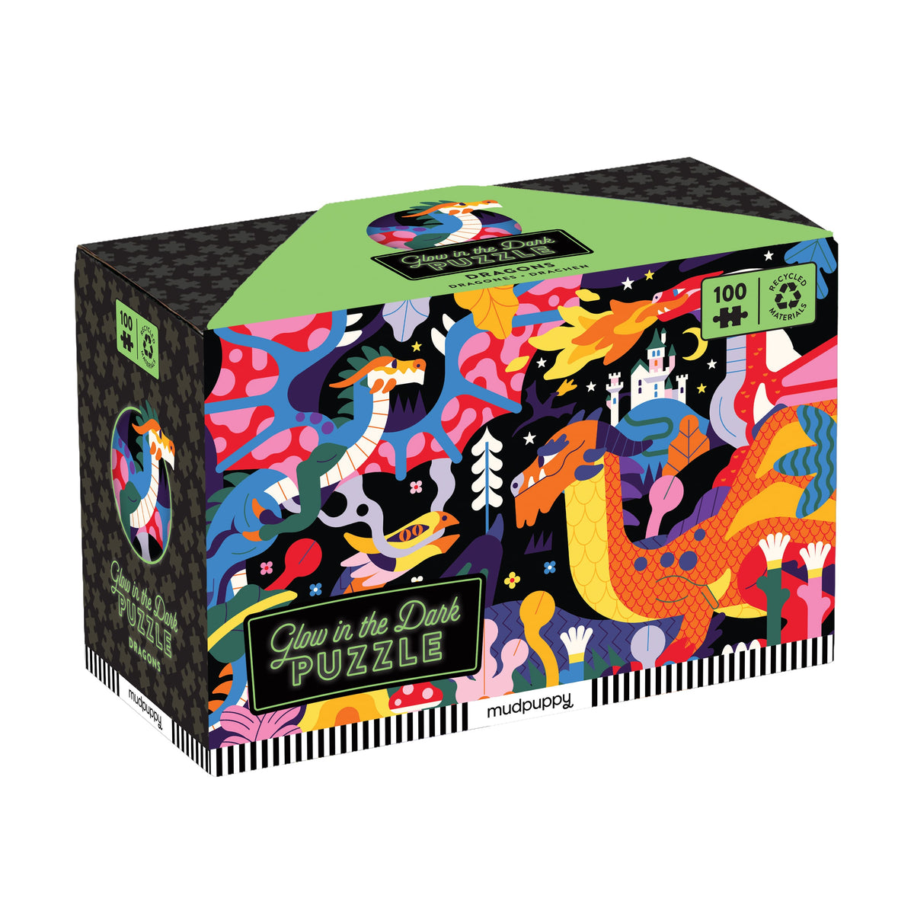
Dragons by day, glowing surprises when the lights go out. A crossover with his love of dragons and magic. 100 pieces · Ages 5+.
$13.99
View at Mudpuppy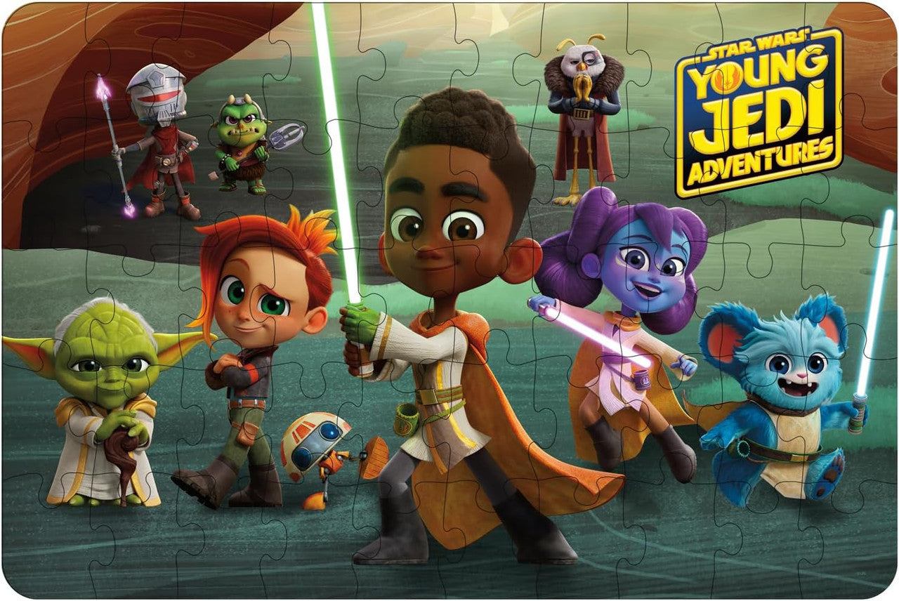
A big, easier puzzle featuring the young Jedi characters. Finished size is 3 feet by 2 feet. 50 jumbo pieces · Ages 4+. Check with Mom for duplicates, as with other Star Wars gifts.
$17.95
View at Serious Puzzles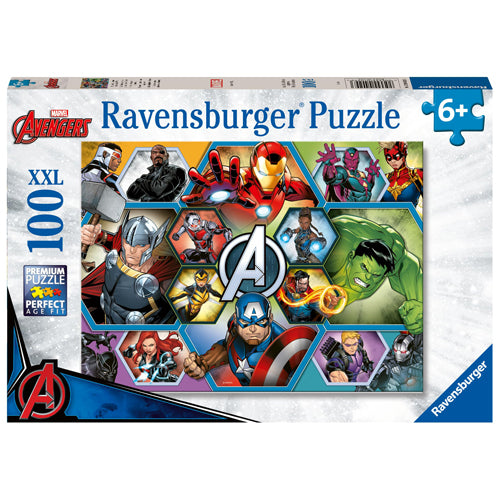
A superhero team picture featuring Iron Man, Thor, Hulk, Captain America, and more. 100 extra-large pieces · Ages 6+. Check the retailer’s current price and U.S. shipping cost.
View at Zatu